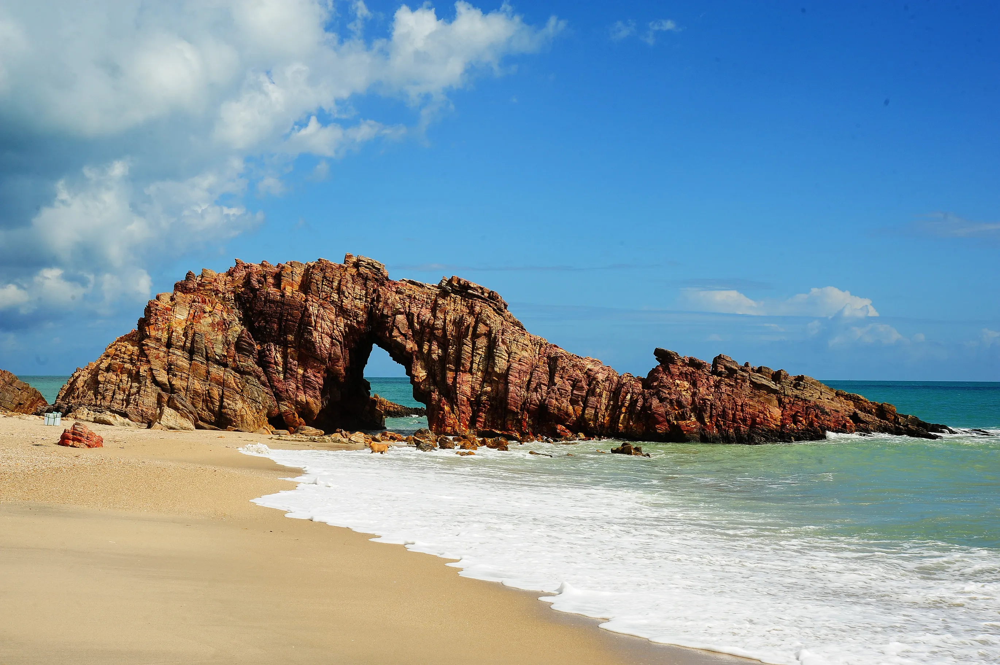

Um lugar que eu gostaria de conhecer! - Jericoacoara

Jericoacoara, mais conhecida apenas por “Jeri”, é um dos destinos nordestinos que se tornou sensação entre os viajantes nas últimas décadas. A vila, localizada
a cerca de 300 km de Fortaleza, mais precisamente na cidade de Jijoca de Jericoacoara, é um lugar pacato, com ruas de areia e cenários bucólicos - ideais para
quem quer renovar as energias!
Escondida entre dunas, lagoas, mangue e o mar, Jeri era uma simples vila de pescadores, um local de difícil acesso e com praticamente nenhuma
estrutura. Hoje o cenário simples ainda se faz presente, mas a vila é também mais moderna, tem hotéis e pousadas com excelente estrutura, além de
restaurantes e bares que agradam até mesmo os turistas mais exigentes.
As ruas permanecem com pouca iluminação, os pés continuam tocando a areia ao caminhar e aquela atmosfera quase familiar de uma cidade
interiorana ainda é o que move e envolve o clima da região, que agrada a tanta gente.